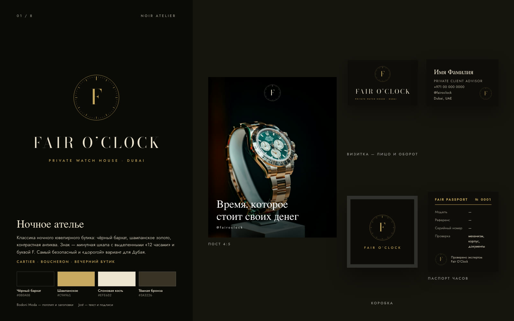
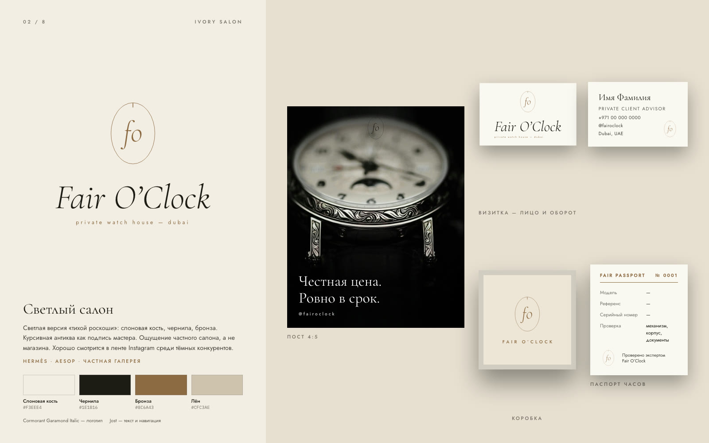
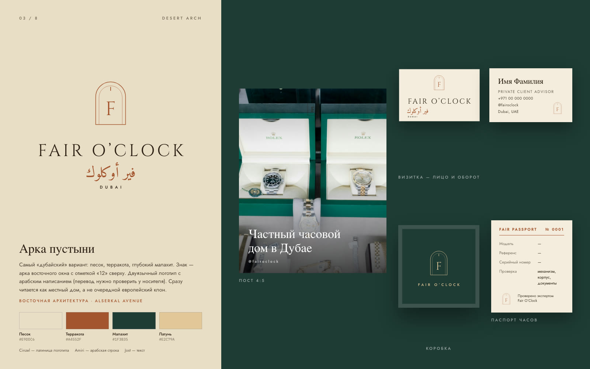
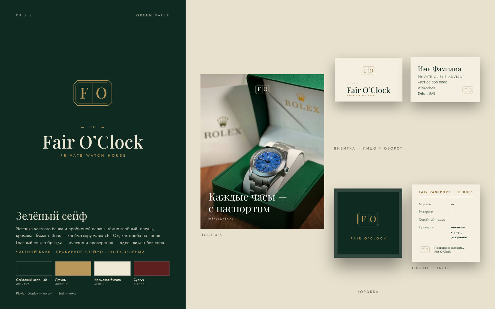
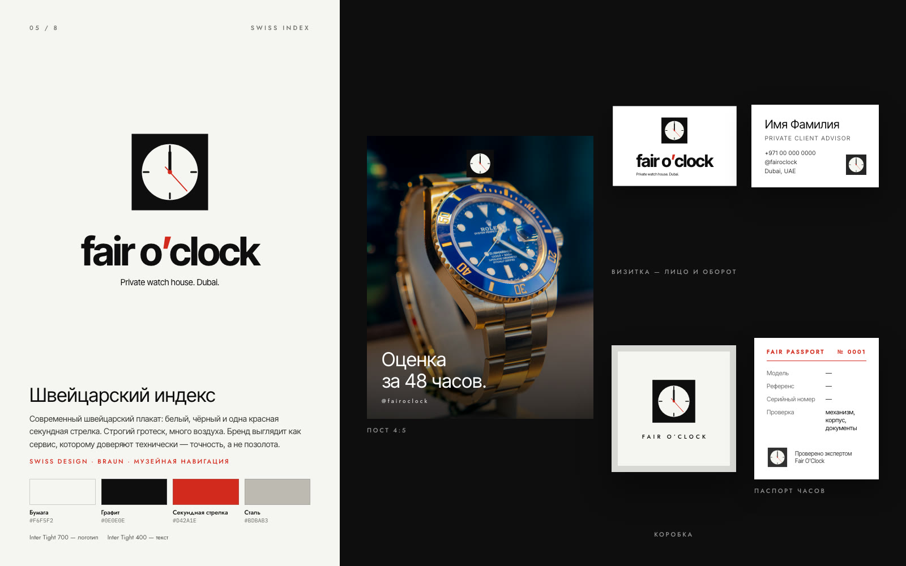
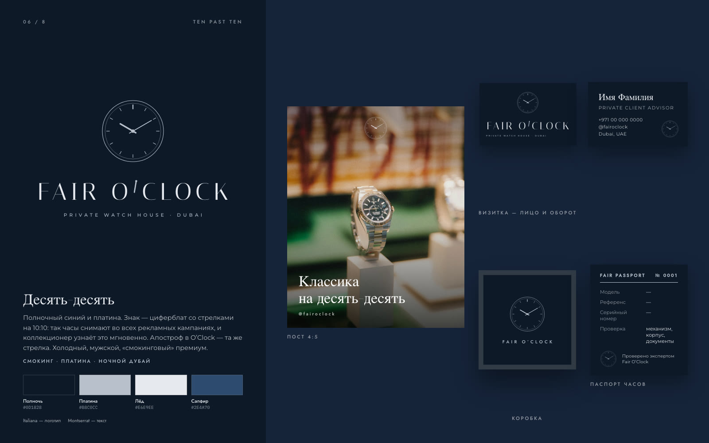
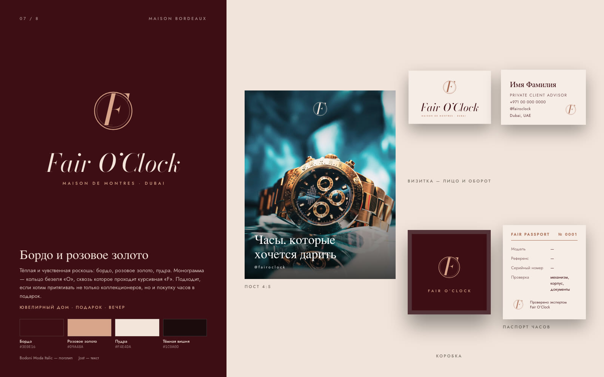
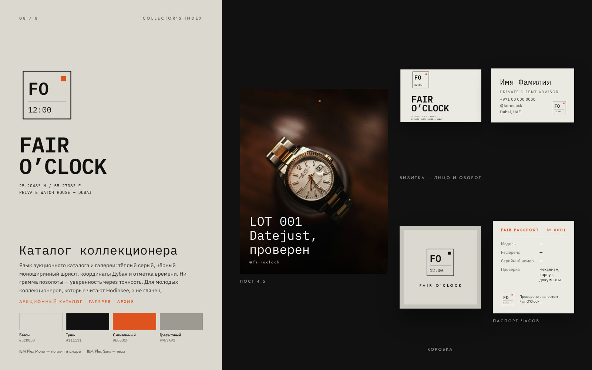

Noir AtelierНочное ателье

Классика ночного ювелирного бутика: чёрный бархат, шампанское золото, контрастная антиква. Знак — минутная шкала с выделенными «12 часами» и буквой F. Самый безопасный и «дорогой» вариант для Дубая.
Ivory SalonСветлый салон

Светлая версия «тихой роскоши»: слоновая кость, чернила, бронза. Курсивная антиква как подпись мастера. Ощущение частного салона, а не магазина. Хорошо смотрится в ленте Instagram среди тёмных конкурентов.
Desert ArchАрка пустыни

Самый «дубайский» вариант: песок, терракота, глубокий малахит. Знак — арка восточного окна с отметкой «12» сверху. Двуязычный логотип с арабским написанием (перевод нужно проверить у носителя). Сразу читается как местный дом, а не очередной европейский клон.
Green VaultЗелёный сейф

Эстетика частного банка и пробирной палаты: тёмно-зелёный, латунь, кремовая бумага. Знак — клеймо-хоруэмарк «F | O», как проба на золоте. Главный смысл бренда — «честно и проверено» — здесь виден без слов.
Swiss IndexШвейцарский индекс

Современный швейцарский плакат: белый, чёрный и одна красная секундная стрелка. Строгий гротеск, много воздуха. Бренд выглядит как сервис, которому доверяют технически — точность, а не позолота.
Ten Past TenДесять-десять

Полночный синий и платина. Знак — циферблат со стрелками на 10:10: так часы снимают во всех рекламных кампаниях, и коллекционер узнаёт это мгновенно. Апостроф в O’Clock — та же стрелка. Холодный, мужской, «смокинговый» премиум.
Maison BordeauxБордо и розовое золото

Тёплая и чувственная роскошь: бордо, розовое золото, пудра. Монограмма — кольцо безеля «O», сквозь которое проходит курсивная «F». Подходит, если хотим притягивать не только коллекционеров, но и покупку часов в подарок.
Collector’s IndexКаталог коллекционера

Язык аукционного каталога и галереи: тёплый серый, чёрный моноширинный шрифт, координаты Дубая и отметка времени. Ни грамма позолоты — уверенность через точность. Для молодых коллекционеров, которые читают Hodinkee, а не глянец.